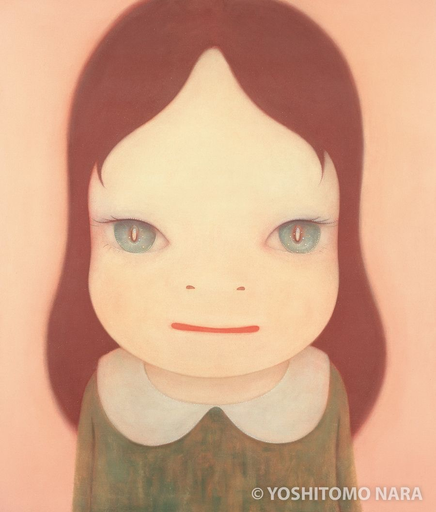

about me
I’m the kind of person who gets curious about new technology and doesn’t want to be the person who has no idea what everyone is talking about. I’m Airin, an HBO-ICT student at HZ University of Applied Sciences. Outside of school, I enjoy running and swimming, especially when I have too much on my mind because they help me get out of my head. I also enjoy listening to all kinds of music, eating sweet things, and being around dogs and kids. I’m good at adapting to new situations, comparing different options, and working independently. I like figuring things out for myself and finding the solution that makes the most sense. I chose HBO-ICT because technology is constantly changing, and I don’t want to fall behind. I have a bit of FOMO when it comes to technology—I want to keep learning and understand what’s new instead of feeling like I’m becoming the “grandma” who doesn’t know how things work. I also like that ICT gives me the freedom to explore different areas and keep discovering new things. A fact about me is that I don’t mind starting as a beginner, but once I care about something, I tend to become quite perfectionistic about the details.
strenghts
-
Adapting to new situations
getting used to unfamiliar environments, systems, and ways of doing things.
-
Comparing options
looking at different possibilities and figuring out which one makes the most sense
-
Working independently
organizing my own work and figuring things out without needing constant guidance
hobbies
-
Running and swimming
when I have too much on my mind, being active helps me get out of my head and feel more present
-
Discovering music
listening to all kinds of music rather than sticking to just one genre
-
Being around dogs and kids
I enjoy their energy, playfulness, and uncomplicated way of enjoying things.
